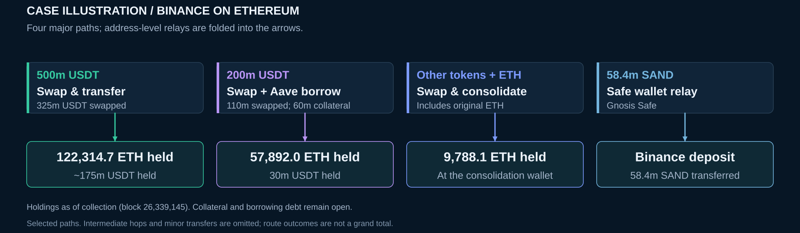

Holdings have a cutoff.
“Still held” means held as of collection at the stated block. Later activity is outside this view.
ETHEREUM / DOWNSTREAM INVESTIGATION
A trace of the Binance case: how stolen assets move, change form, and reach their observed destinations.
Explore the case01 / THE BIG PICTURE
A compact view of the principal routes.
Intermediate wallets are grouped for readability.

02 / FOLLOW A ROUTE
Select a route for its traced outcomes
and supporting transactions.
Selected routes do not form a complete partition of the case. Amounts are asset quantities, not USD valuations; different currencies are not added together. Rounded summaries retain precise source records.
03 / EVIDENCE & SCOPE
This is an observed fund-flow record. A transfer alone does not establish who controls an address.
Inspect the case data“Still held” means held as of collection at the stated block. Later activity is outside this view.
USDT deposited as Aave collateral remains a collateral position. Borrowed ETH creates a separate debt relationship.
Bridge paths record source-chain activity. They do not imply that destination-chain funds have been traced.
Route outcomes follow traced funds. A wallet receiving other funds can have a larger total balance.